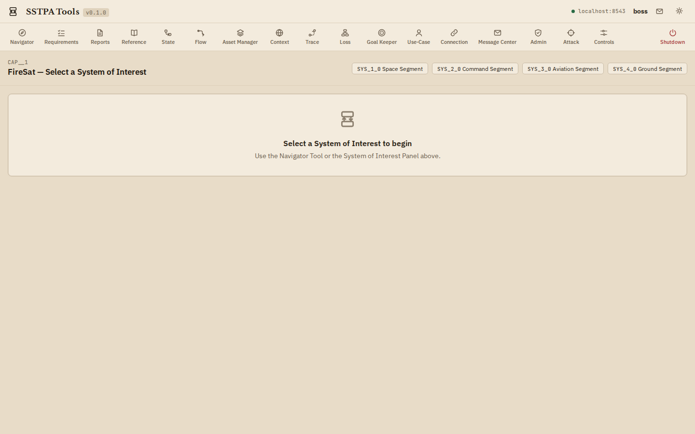
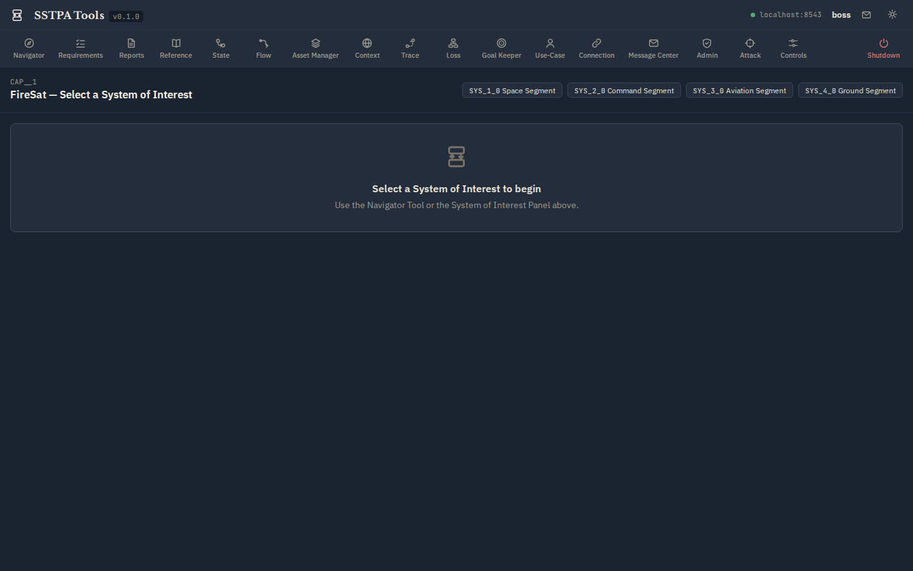

Section 2
Start and manage a project
Projects are Capability-rooted hierarchies of Systems. You analyze one System of Interest at a time.
Capability / System hierarchy
A Capability (or Project root) owns Tier-1 Systems. Each System can contain Elements that later parent child Systems (Step 14). The Navigator Tool visualizes this tree; the SoI panel lets you walk parent/child without opening Navigator.
Light (parchment)

Dark (bluish-grey)

Select a System of Interest
- From the empty SoI prompt, click a Tier-1 chip (for example Space Segment), or open Navigator.
- In Navigator SoI mode, select a :System node, choose Select as current SoI, and confirm.
- Confirm the SoI panel updates; Main Panel sections fill with counts for that SoI.
FireSat tip. For security-analysis screenshots and the Loss / Goal Keeper path, drill to Fire Detection Payload. Higher tiers are better for architecture and Connection work.
Light (parchment)

Dark (bluish-grey)

Create and edit via Main Panel + Data Drawer
- Expand a Main Panel section and click + Add to create a node of that type (staged commit).
- On an existing card, click Edit in Data Drawer.
- Adjust properties / associations, then Commit and confirm. The Backend validates labels, relationships, and SoI membership.
Light (parchment)

Dark (bluish-grey)

What “project management” means here
SSTPA Tools is not a generic project tracker. Managing a project means maintaining the authoritative Core Data Model graph: Systems, Interfaces, Functions, Elements, Assets, States, Environments, Controls, Attacks, Losses, and assurance Goals—under Backend validation and ownership rules.